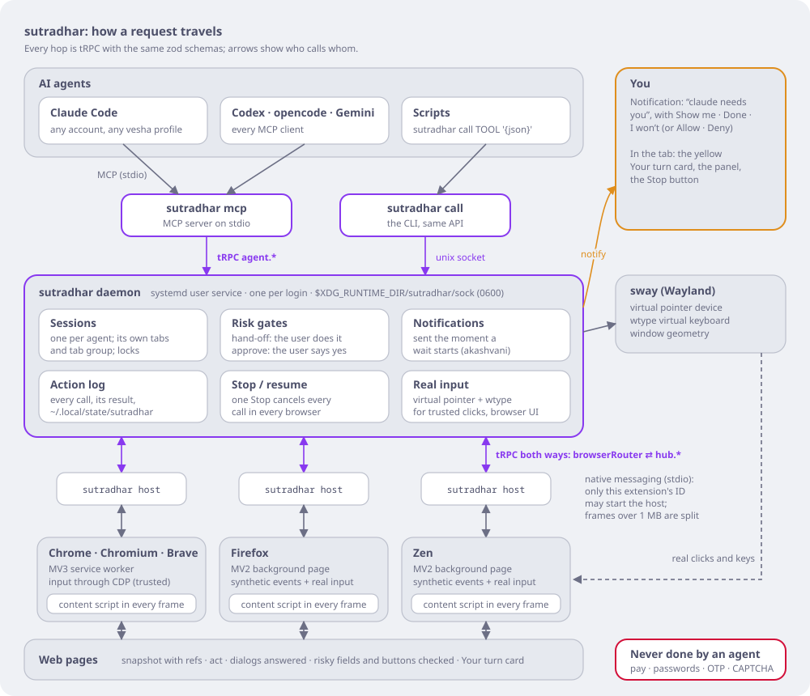
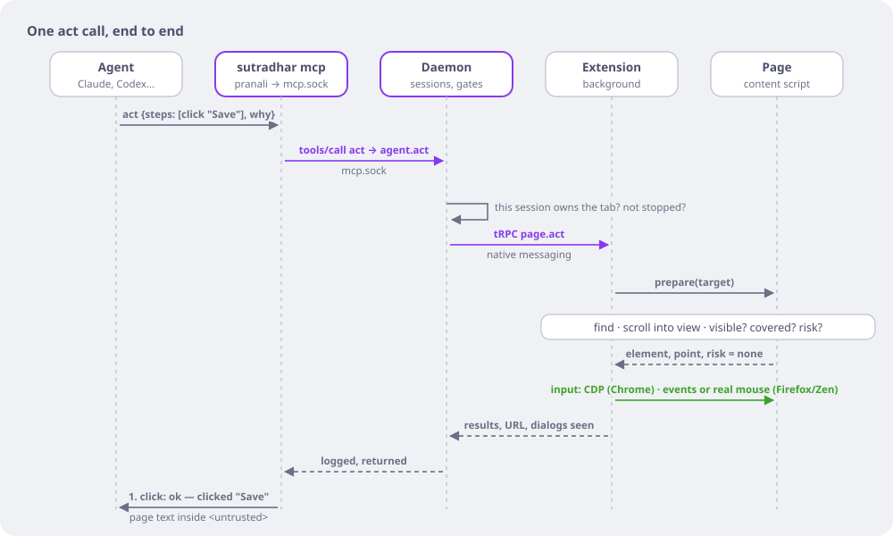
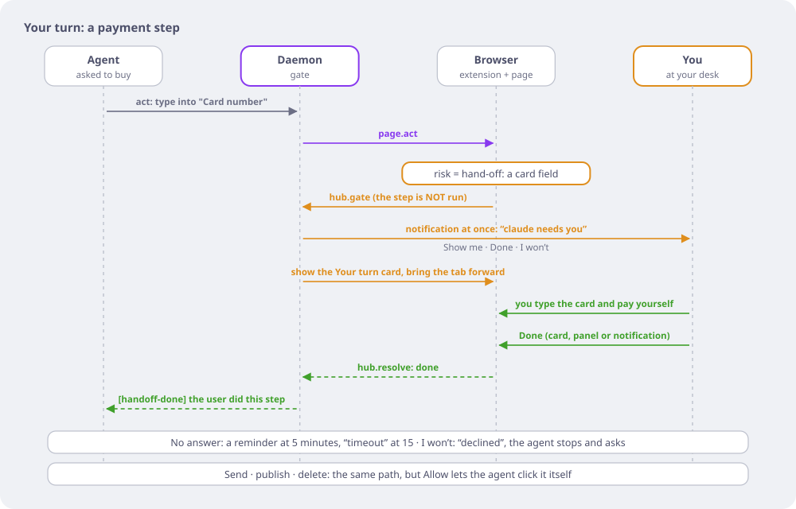

Sūtradhāra (सूत्रधार) is "the holder of the strings": the director who opens and runs every Sanskrit drama. Here the agent writes the play and sutradhar holds the strings: it moves the browser for the agent, and hands the stage back to you whenever a step is yours.
#What it does
- Everything a person does in a browser. Open, switch and close tabs and windows; read a page as a tree of controls or as Markdown; click, double-click, right-click, hover, drag; type, press keys and chords; fill forms, pick options, tick boxes; upload files and drop them on drop zones; download files and read them; save a page as PDF; answer alert/confirm/prompt dialogs; search bookmarks and history; record a GIF of what happened.
- Pages as they really are. Shadow DOM (open and closed), cross-origin iframes, rich editors (contenteditable, ProseMirror, CodeMirror, Monaco), React/Vue controlled inputs, elements hidden under overlays (reported, not clicked blindly), infinite scroll.
- Real mouse and keyboard when a page needs them. Chrome gets trusted input through its debugger protocol. On Firefox and Zen, synthetic events cover most pages; when a page ignores them, sutradhar repeats the click with a real pointer (a virtual pointer device on sway) and real keys (wtype). The same hands reach what no extension may touch: the address bar, the browser's menus, permission prompts, file pickers.
- Any agent. Claude Code, Codex, opencode, Gemini, anything that speaks MCP, and scripts through
sutradhar call. - Several browsers at once. Chrome, Chromium, Brave, Firefox and Zen can all be connected; each agent picks one.
- Safe by default. Page text reaches the agent marked untrusted. Risky steps go to you. One Stop ends everything. Every action is logged.
#Install
#Requirements
| What | Why |
|---|---|
| Linux, Node.js 22.18+ | the daemon, the native-messaging host, the MCP server |
| Chrome / Chromium / Brave 116+, Firefox 128+ or Zen | the browser it drives |
notify-send (libnotify) and a notification server | "your turn" notifications |
sway (or another wlroots compositor), wtype | real mouse and keyboard (optional) |
wl-copy / wl-paste | the clipboard tool |
ffmpeg | record (GIF/WebM) |
pdftotext (poppler) | reading downloaded PDFs (optional) |
#Steps
1. The daemon and the native-messaging hosts. In Vayu it's one command:
kosha install sutradhar # builds it, links `sutradhar`, runs `sutradhar install`Anywhere else:
git clone https://github.com/Theyashsawarkar/sutradhar ~/.local/share/sutradhar
cd ~/.local/share/sutradhar
pnpm install && pnpm build
ln -s "$PWD/bin/sutradhar" ~/.local/bin/sutradhar
sutradhar install # native-messaging hosts for every browser found + the user servicesutradhar install writes a host manifest for every browser it finds (Chrome, Chromium, Brave, Edge, Vivaldi in ~/.config/<browser>/NativeMessagingHosts; Firefox and Zen in ~/.mozilla/native-messaging-hosts), enables sutradhar.service, and prints where the extension files are.
2. The extension, once per browser. Browsers don't let another program put an extension into your profile, so this step is yours. The files are in dist/ (or download them from a release):
| Browser | File | How |
|---|---|---|
| Zen | dist/sutradhar-firefox.xpi | Zen only installs add-ons signed by Mozilla unless you allow others: open about:config, search xpinstall.signatures.required, double-click it to false. Then about:addons → gear → Install Add-on From File… → the .xpi, and allow its permissions. |
| Chrome, Chromium, Brave | dist/chrome/ | chrome://extensions (brave://extensions) → turn on Developer mode → Load unpacked → the folder. Keep the folder where it is: the browser runs it from there. |
| Firefox | dist/firefox/manifest.json | Release Firefox only keeps Mozilla-signed add-ons (a signed build is coming). Until then: about:debugging → This Firefox → Load Temporary Add-on… → manifest.json; it lasts until Firefox restarts. |
Turning off xpinstall.signatures.required lets Zen install any unsigned add-on, not just this one; turn it back on once a signed build is out.
3. Check it.
sutradhar status # daemon: running … browsers: zen: Zen 160.0.1, extension 0.1.1
sutradhar doctor # every piece, with a fix for anything missingThe toolbar button opens sutradhar's panel: green "Connected" means the browser reached the daemon.
4. The agents. In Vayu, vishvakarma gives the MCP server to every agent (Claude Code on every account, Codex, opencode, Gemini CLI); restart an agent's session to pick it up. Elsewhere, see below.
#Adding it to an agent by hand
claude mcp add sutradhar -- sutradhar mcp --name claude
codex mcp add sutradhar -- sutradhar mcp --name codexAny other MCP client: command sutradhar, arguments mcp --name <agent>.
#Using it from an agent
The MCP server's own instructions cover the basics. The full playbook is the sutradhar skill (in vishvakarma, so every agent gets it): the loop below, forms and files, pages that fight back, the steps that are the user's, approvals and Stop.
A typical run:
navigateto a URL (it opens a tab in the agent's own tab group if it has none).snapshotto read the page; every control has a ref likee12(f3:e7inside a frame): ```- page "Sign in" https://example.com/login
- main
- heading "Sign in" [level=1]
- textbox "Email" [ref=e4] [required]
- textbox "Password" [ref=e5] [required]
- button "Continue" [ref=e6] ```
- main
- page "Sign in" https://example.com/login
actwith a list of steps: ``json {"steps": [{"do": "type", "ref": "e4", "value": "me@example.com"}, {"do": "click", "ref": "e6"}], "why": "log in to check my order"}``snapshotagain after the page changes.
Agents work only in their own tabs (and popups those open). To use one of yours, an agent asks with tab_attach, and you approve it.
#Your turn: what the agent never does
The page itself checks every step, whatever the agent asked for. These are handed to you:
- typing into password, card, CVV, expiry, OTP / one-time-code, PIN, UPI PIN, bank account or IFSC fields;
- buy, pay, place order, checkout, transfer, send money, subscribe, delete account and similar buttons, and submitting a form that holds card details;
- anything on a payment gateway or bank page (Razorpay, Stripe Checkout, PayPal, PayU, Paytm, PhonePe, Cashfree, Juspay, the big Indian banks…), and CAPTCHAs (reCAPTCHA, hCaptcha, Cloudflare Turnstile).
What happens:
- A notification goes out the moment the wait starts: "claude needs you: Complete the payment yourself on example.com", with Show me, Done and I won't.
- The tab comes to the front with a yellow border and a Your turn card on the page, saying what to do and why the agent wanted it.
- You do it in the page, then press Done (on the card, in the toolbar panel or in the notification). The agent gets
handoff-doneand carries on; I won't tells it to stop and ask you. - A reminder after 5 minutes; after 15 the agent is told you didn't finish.
Agents can also hand you a step themselves with the handoff tool (log in, solve a CAPTCHA, approve a 2FA prompt).
Send, publish, post, delete, merge, accept, book and similar buttons are a lighter case: you press Allow and the agent clicks it. So are eval_js, reading cookies or the clipboard, tab_attach and os_input. A site you trust can skip the question (toolbar panel, or settings).
The card's buttons live in a closed shadow root and only answer real clicks, so a page can't press Done or Allow for you.
#Tools
| Tool | Does |
|---|---|
browsers | list connected browsers, pick one |
tabs, tab_open, tab_close, tab_focus, tab_update | tabs (pin, mute, zoom, duplicate) |
tab_attach | borrow one of your tabs (you approve) |
navigate | URL, back, forward, reload; waits for the load |
snapshot | the page as roles, names, states and refs (frames and shadow DOM included) |
page_text | the main content as Markdown |
screenshot | viewport, full page or one element |
find | elements by text, name, role or CSS |
act | click, hover, move, type, press, select, check, fill, clear, focus, scroll, drag, upload, wait |
dialog | how to answer the next alert/confirm/prompt |
eval_js | run JavaScript (you approve) |
console_read, network_read | the page's console and requests |
wait_for | text, element, gone, URL, network idle, download |
downloads | list, start, wait, read |
page_pdf | save as PDF |
window | list, new (private) window, resize, maximize |
clipboard | set; read (you approve) |
bookmarks, history, cookies | browser data (cookies: you approve) |
record | GIF or WebM of a tab |
handoff | give a step to you and wait |
os_input | real mouse and keyboard on the browser window (you approve) |
log | the session's recent actions |
Everything Claude in Chrome's tools did maps here: read_page → snapshot, get_page_text → page_text, computer → act + screenshot, form_input → act fill, javascript_tool → eval_js, gif_creator → record, browser_batch → act, tabs_context_mcp → tabs, select_browser → browsers.
#Command line
sutradhar status what's connected: browsers, agent sessions, waiting steps
sutradhar stop stop every agent now
sutradhar resume let stopped agents carry on (from a terminal)
sutradhar log [-n N] recent actions
sutradhar call TOOL [JSON] call a tool as an agent would
sutradhar tools the tools agents get
sutradhar install | uninstall | doctor
sutradhar mcp [--name NAME] the MCP server (agents start this)
sutradhar daemon | host the daemon; the native-messaging hostStop is also the red button in the toolbar panel and on the page while an agent acts. In Vayu, Super+Shift+Delete runs sutradhar stop from anywhere. A stopped agent's calls fail with "the user pressed Stop" until you resume (panel, or sutradhar resume in a terminal).
#Settings
~/.config/sutradhar/config.toml (all optional):
[handoff]
timeout_minutes = 15
reminder_minutes = 5
extra_hosts = ["pay.mybank.example"] # more payment/bank hosts: every action there is yours
[approve]
timeout_minutes = 5
[os_input]
enabled = true # real mouse/keyboard for Firefox/Zen and browser UI
auto_retry = true # repeat a click the page ignored with the real mouse
[notify]
enabled = true
[sites."github.com"]
approve = "allow" # send/publish/delete without asking here ("ask", "deny")
eval = "ask"
cookies = "deny"The toolbar panel edits the approve and eval rules for the site you're on.
| Environment | |
|---|---|
SUTRADHAR_SOCKET | the daemon's socket (default $XDG_RUNTIME_DIR/sutradhar/sock) |
SUTRADHAR_AGENT | the agent's name for mcp and call |
SUTRADHAR_SESSION | the session sutradhar call uses (default: one per terminal); it keeps its tabs between calls and ends after 30 idle minutes |
SUTRADHAR_BROWSER | the browser agents use first when several are connected (zen, chrome…) |
SUTRADHAR_NO_OS_INPUT | turn the real mouse/keyboard off |
Files: the log is ~/.local/state/sutradhar/log.jsonl; downloads saved by page_pdf and record go to ~/Downloads/sutradhar/.
#How it works
#The pieces

- Agents start
sutradhar mcp(an MCP server on stdio); scripts usesutradhar call. Both are thin clients: each opens a session on the daemon, named after the agent. - The daemon (
sutradhar.service, one per login) is where everything meets: connected browsers, agent sessions and the tabs each owns, the risk gates, notifications, the action log, Stop, and the real mouse and keyboard. It listens on$XDG_RUNTIME_DIR/sutradhar/sock(mode 0600). Any client starts it if it isn't running. - The native-messaging host (
sutradhar host) is started by each browser when the extension connects. It only pipes frames between the browser's stdio and the daemon's socket, splitting any over the browsers' 1 MB limit, and tells the daemon which program started it (Zen calls itself Firefox). - The extension has a background part (tabs, windows, downloads, bookmarks, history, cookies, Chrome's debugger for trusted input and screenshots) and a content script in every frame (the snapshot and its refs, finding elements, synthetic input, risk checks, the dialog guard, the console log, and the on-page overlay and Your turn card).
#One call, end to end

- The agent calls
actwith steps and awhy. sutradhar mcpcallsagent.acton the daemon over the unix socket.- The daemon checks the session may use that tab (its own tabs and the popups they open, or one you lent it) and that you haven't pressed Stop, then calls
page.acton the extension. - For each step the content script finds the element (by ref, selector, text or point, through frames and shadow DOM), scrolls it into view, waits for it to settle, checks it is visible, enabled and not covered, and judges its risk.
- With no risk, the input goes in: CDP on Chrome (trusted); careful synthetic events on Firefox and Zen, or the real pointer and keyboard when a step asks for them or a page ignored a synthetic click.
- The results (each step's outcome, the URL, any dialogs answered) go back up; the daemon logs the call; the agent gets the text inside
<untrusted>.
#When a step is yours

The gate is in the page, not in the agent's good manners: the step never runs. The notification goes out first, then the tab comes forward with the yellow card. Your Done (from the card, the toolbar panel or the notification) reaches the daemon, and the agent's call returns handoff-done. An approval (send, publish, delete…) takes the same path, but your Allow lets the step run.
#Design choices
- tRPC on every hop. One set of zod schemas is the input of each procedure and of each MCP tool, so the tool list can't drift from the code. Both ends of a connection serve a router: the extension serves
browserRouter(the daemon calls it), the daemon serveshub(the extension calls it) andagent(agents call it), over one framed, two-way link (packages/protocol/src/rpc.ts). - Native messaging, not a localhost port. Any website can reach a localhost port; only this extension's ID can start the native host.
- Input. Chrome: CDP
Input.*(trusted). Firefox/Zen: synthetic events done carefully (execCommandfor typing, so frameworks see it), and the real pointer (a Wayland virtual pointer device, written into the daemon) and keyboard (wtype) when needed. Firefox's popup blocker ignores synthetic clicks on new-tab links, so those open the way the click would have. - Dialogs are answered in the page (alert: OK; confirm/prompt: Cancel unless the agent set an answer with
dialog), so they never freeze an agent tab, and Chrome's debugger answers any that slip through. Outside agent tabs nothing changes.
The diagrams are generated by scripts/diagrams.py (light and dark in one SVG). Design notes are in docs/adr.
#Security
- Page content reaches agents inside
<untrusted>blocks, and the MCP instructions tell them it is data, never orders. - Password, card and OTP values never appear in snapshots, and the agent can't type into those fields.
- The socket is
0600in your runtime dir; browsers may only call the browser side, agents only the agent side. A local program running as you can still reach the socket: sutradhar guards against web pages and misled agents, not against malware already on your account.sutradhar resumerefuses to run without a terminal, so an agent's shell can't undo your Stop.
#Development
pnpm install
pnpm build # dist/: daemon bundle, dist/chrome, dist/firefox, the .xpi
python3 scripts/diagrams.py # the README's diagrams (assets/diagrams/*.svg)
pnpm typecheck
pnpm test # unit tests (vitest)
pnpm e2e # Chromium, Zen and Firefox in throwaway headless profiles, plus MCP
tests/e2e/nested-sway.sh # real mouse/keyboard in a private headless sway (never your desktop)The end-to-end tests run every tool against a local fixture site with the hard cases (shadow DOM, cross-origin frames, dialogs, uploads, drag and drop, fake payment and password pages with made-up data). They never touch your real browser, profile, daemon or desktop.
#Troubleshooting
- "No browser is connected": the extension isn't installed, or the native host isn't: run
sutradhar doctor. In the browser, the toolbar panel says whether it reached the daemon. - The panel says "Not connected":
sutradhar installagain (the host manifest must point at this checkout), then restart the browser. - Chrome shows "is debugging this browser": that's how Chrome gives trusted input; it goes away 20 seconds after the agent's last action.
- A click on Firefox/Zen did nothing: pass
trusted: trueon the step, or checkos_input.enabled(needs sway andwtype). - Zen says "This add-on could not be installed because it has not been verified": set
xpinstall.signatures.requiredtofalseinabout:configfirst (see Install). - Firefox won't install the .xpi: release Firefox only takes signed add-ons; use the release's signed file, or Zen.